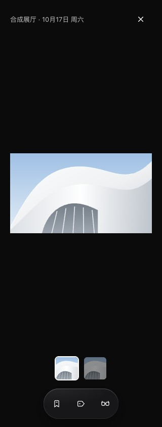
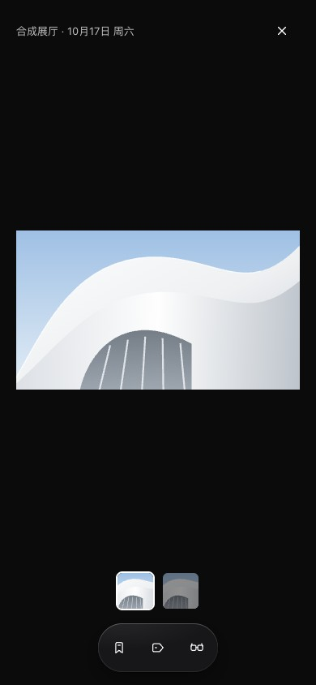
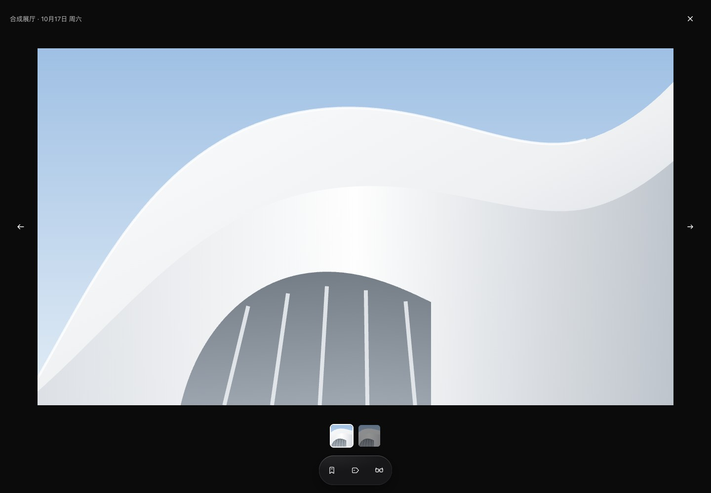

照片大图页 · 补通用操作
2026-10-19 用户选择 B，见 ADR 0041。取代照片页缺少通用操作的现状；其余卡片继续执行 ADR 0037。原版收藏、标签、稍后读置于缩略图下，不新增专属操作、更多菜单或图标文字。
本地 40 号画板，线上未同步。以下为真实实现截图，没有临时样式，只使用合成照片。黑底和工具条固定采用既有深色变量，参与排版，不覆盖照片和缩略图；助手交接仍保留。保存或取消标签回到原照片，隐藏偏好全部生效。
手机 320 / 390 · 浅色与深色




桌面 1440


正常、已选中、隐藏与减少透明度由浏览器回归覆盖；生成组件包也核对固定深色环境。Mac 未改，Safari 与真机未检查。未访问或发布线上 Design System、claude.ai 画布或 Mobbin；线上资产记录不变。